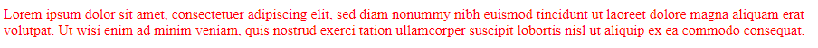
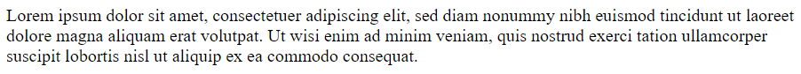
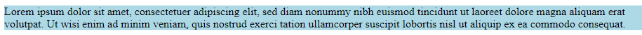
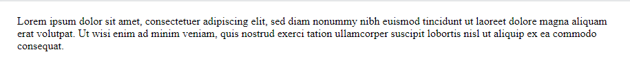
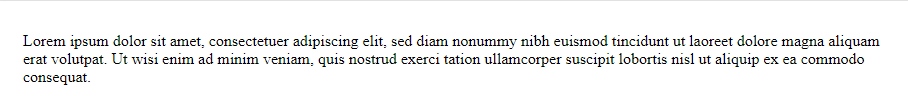

Propiedades de CSS
Propiedad color (Color de texto)
La propiedad color establece el color del texto.
Ejemplo de código:
p {
color: red;
}
Resultado en el navegador:

Para más información, visita la documentación de W3S.
Propiedad font-size (Tamaño de fuente)
La propiedad font-size define el tamaño del texto.
Ejemplo de código:
p {
font-size: 20px;
}
Resultado en el navegador:

Para más detalles, revisa la documentación de W3S.
Propiedad background-color (Color de fondo)
La propiedad background-color establece el color de fondo de un elemento.
Ejemplo de código:
p {
background-color: lightblue;
}
Resultado en el navegador:

Consulta la documentación de W3S para más detalles.
Propiedad margin (Margen)
La propiedad margin establece el espacio exterior de un elemento.
Ejemplo de código:
p {
margin: 20px;
}
Resultado en el navegador:

Revisa la documentación de W3S para aprender más.
Propiedad padding (Relleno)
La propiedad padding establece el espacio interior de un elemento.
Ejemplo de código:
p {
padding: 15px;
}
Resultado en el navegador:

Para más información, consulta la documentación de W3S.